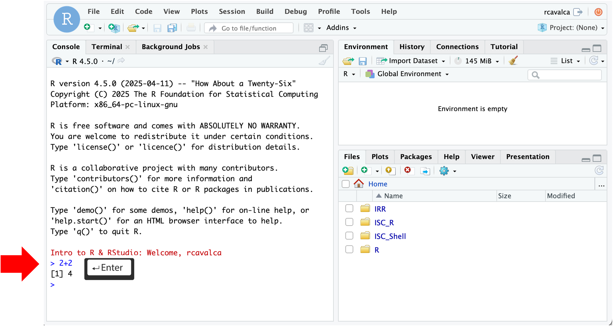
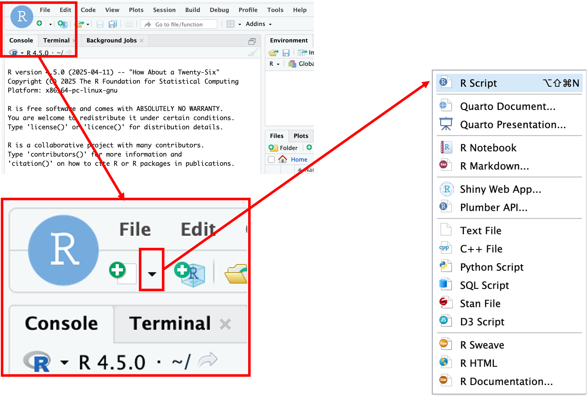
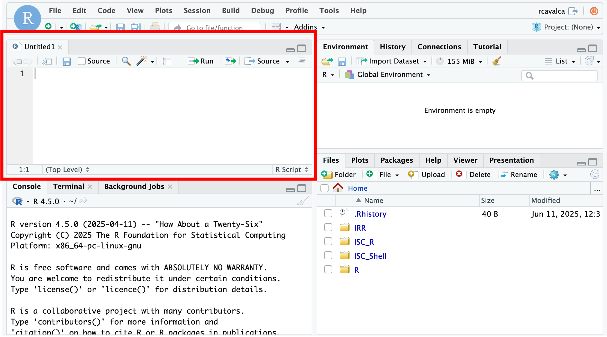
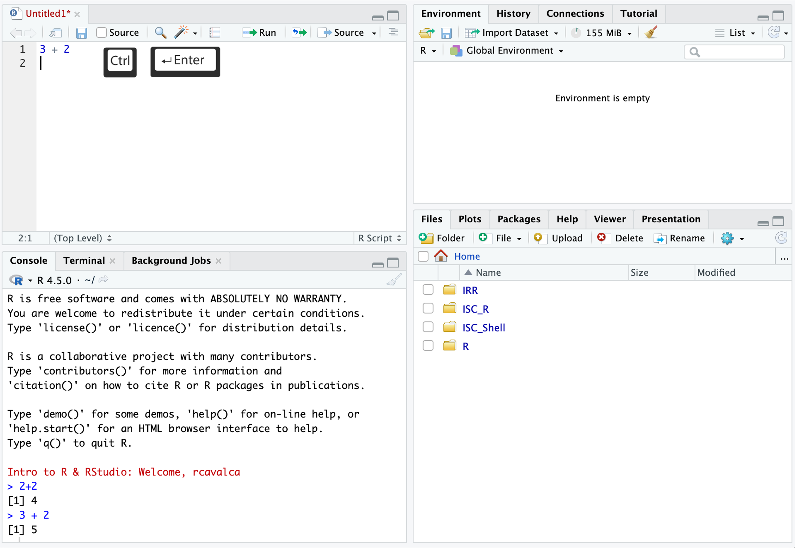

RStudio is an integrated development environment where you can write, execute, and see the results of your code. The interface is arranged in different panes:
Working directly in the console is working directly with R. Commands can be entered and run with the Enter key:
> 2+2
[1] 4
Checkpoint
Instead of entering commands directly into the Console, we’ll record them in and run them from a script. Some benefits to recording your code in a script include:
We’ll create a script file by clicking on the icon in the upper-left of the interface (a blank piece of paper with a + sign), and selecting R Script.

The new pane that opens is the Source pane, and you can think of it as a text editor:

Code entered in a script file must explicitly be sent to the Console for execution with the Ctrl + Enter command. Enter the following command into the script file and execute it with Ctrl + Enter:
3+2Looking in the Console we see the executed line and its result. Note that pressing Enter in the script creates a new line and does not execute the code as in the Console.

The key differences between the Console and Script panes in RStudio:
| Console | Script |
|---|---|
| Reset across sessions | Preserved across sessions |
| Run with Enter | Run with Ctrl + Enter |
| Quick, exploratory | Recorded, directed |
We encounter various types of data in our lives. A computer thinks about free text, structured text, numbers, etc. as different types as well. In R, as in many other programming languages, these basic data types are the building blocks of more complex data structures.
| Mode (abbreviation) | Type of data | Example |
|---|---|---|
| Numeric (num) | Decimals, integers, etc. | 1.0, 3.14, -2.5,
10, etc. |
| Character (chr) | Sequence of letters or numbers. | "Hi", 'Hi', "1",
etc. |
| Factor (fct) | Categorical values. | Months of the year. |
| Logical | Boolean values | TRUE, FALSE, T,
F, etc. |
Computation is powerful because it allows us to procedurally process
data, and to use those outputs as inputs for further analysis. To do
that, we assign values to named objects using the
= operator:
# -------------------------------------------------------------------------
# Assigning values to objects
age = 26
age[1] 26wizard_name = 'Tom Riddle'
wizard_name[1] "Tom Riddle"wizard_name = 'Harry Potter'
wizard_name[1] "Harry Potter"Notice a few things. Each object appears in the Environment pane
after assignment. Assigning to wizard_name a second time
overwrites the first value — the object holds the most recent
assignment. Evaluating the name of an object prints its value in the
Console. We will use this pattern repeatedly.
Some practices make object names easier to work with:
name, Name, and NAME are three
distinct objects.Some things will cause errors:
if, else,
for, etc. (see here
for the complete list).Exercise
Create at least four objects in your script, one of each data type from the table above. Choose any names and values you like. Run your code with Ctrl + Enter and verify the objects appear in the Environment pane.
Checkpoint — Did anyone get an error? Let’s take a look.
Errors are a completely normal part of coding and they are an opportunity to learn. Let’s look at a few common ones.
# -------------------------------------------------------------------------
# Error: variable name with a space
favorite number = 12Error in parse(text = input): <text>:4:10: unexpected symbol
3:
4: favorite number
^# -------------------------------------------------------------------------
# Error: variable name beginning with a number
1number = 3Error in parse(text = input): <text>:4:2: unexpected symbol
3:
4: 1number
^# -------------------------------------------------------------------------
# Example of not closing quotes
read_csv('data/gapminder_1997.csv)# -------------------------------------------------------------------------
# Example of not closing parentheses
round(3.1415, 2In the last two cases, the Console displays a + to
indicate that R is waiting for more input. To get out of this state,
press Esc and try again.
The key to correcting errors is understanding what went wrong. Sometimes R can help, while other times it seems willfully obtuse.
If you’re still stuck, reach out for help. For the workshop, please post the question in Slack with the following information:
This way we’ll more quickly be able to diagnose the problem.
Individual objects are useful, but data often has structure —
multiple observations of multiple variables. In R, the natural way to
represent tabular data is a data.frame. Let’s build one
together using names and birth months from people in the workshop:
# -------------------------------------------------------------------------
# Build a data.frame from participant names and birth months
workshop_data = data.frame(
name = c("Alice", "Bob", "Carol"),
birth_month = c(3, 11, 7)
)
workshop_data name birth_month
1 Alice 3
2 Bob 11
3 Carol 7The c() function combines values into a
vector — the building block of a column in a data.frame.
Notice that name is a character column and
birth_month is numeric, consistent with the data types we
discussed earlier.
Checkpoint
In practice, we almost never enter data by hand. Data usually lives
in files, and reading those files well is where R’s package ecosystem
really shines. Out of the box, R has a number of useful functions, but
its power lies in extending its functionality with packages. You can
think of packages as collections of functions organized around a
particular task. The tidyverse is a collection of packages
designed to work together to make data manipulation and visualization
easier.
In order to use functions from a package, we first need to load it into our R session:
# -------------------------------------------------------------------------
# Load the tidyverse package
library(tidyverse)Note: Package loading messages
Loading a package can result in a lot of feedback from R. These aren’t necessarily errors, but give more information about the result of loading the package. The output tells us which packages were loaded (note that
tidyverseis sort of a meta-package of packages). The first section of the output states which packages were loaded and their versions. The second section notes “Conflicts” that occur because the name of a function is used multiple times. Sodplyr::filter() masks stats::filter()means that thedplyrlibrary and thestatslibrary both have functions calledfilter(), and that when callingfilter(), thedplyrversion will be the default.
Checkpoint
Now let’s use tidyverse’s read_csv() function to read in
some data from a file, rather than typing it in by hand:
# -------------------------------------------------------------------------
# Load the gapminder 1997 data
gm97 = read_csv('data/gapminder_1997.csv')Rows: 142 Columns: 6
── Column specification ────────────────────────────────────────────────────────────────────────────────────────
Delimiter: ","
chr (2): country, continent
dbl (4): year, pop, lifeExp, gdpPercap
ℹ Use `spec()` to retrieve the full column specification for this data.
ℹ Specify the column types or set `show_col_types = FALSE` to quiet this message.With the cursor on this line we can click Run, or type
Ctrl+Enter. We should see output in the Console
pane as well as gm97 in the Environment pane. We’ll explore
this data in later lessons.
Checkpoint
Let’s break down this command:
gm97 is the variable name we’re giving
to the data we read in.= is the assignment operator which
assigns the object on the right to the name on the left.read_csv() is a function in
tidyverse that reads CSV files.'data/gapminder_1997.csv' is the
argument to read_csv() that specifies the
file to read.The output of read_csv() in the Console pane gives
information such as the dimensions of the data, the delimiter of the
file, and how the columns of the data were interpreted.
Note: The assignment operator
You may have seen another assignment operator,
<-, which is idiosyncratic to R. We leave as an exercise to the learner to look up the edge cases of when to use<-vs=. For now, we will use=as the assignment operator, which is more common in other programming languages.
Earlier we ran read_csv() with a single argument. What
happens if we call it with no arguments at all?
# -------------------------------------------------------------------------
# Example of a function that needs arguments to function
read_csv()Error in read_csv(): argument "file" is missing, with no defaultWe get an error. The key part of the message is “argument ‘file’ is missing, with no default” — in other words, this function needs to be told what to read because there is no default.
Not every function needs arguments, but many do. Try the following:
# -------------------------------------------------------------------------
# Examples of functions with no required arguments
Sys.Date()[1] "2026-04-23"getwd()[1] "/Users/cgates/git/workshop-intro-r-rstudio/source"# -------------------------------------------------------------------------
# Example of a function with multiple arguments
round(3.1415, 2)[1] 3.14Notice that round() takes two arguments. How could we
have known that?
When a function is unfamiliar, we’ll often look at its manual page to
understand what arguments are required, what it does, and what it
outputs. Prepend a ? in front of a function name to pull up
the manual page:
# -------------------------------------------------------------------------
# Put a "?" in front of a function to see its manual page
?roundThe help page for round() tells us the function does
essentially what we’d expect, and gives some other related functions.
The Arguments section gives us the names of the
arguments and what is expected of them. There is often a
Details section to describe nuances, a
Value section to describe the output, and an
Examples section at the bottom which is often the first
place to look.
When we called round(3.1415, 2), it looked like the
first argument is the thing we want to round and the second is how many
digits. That tracks with ?round. R can evaluate arguments
of a function based on their position, as we just saw.
However, the preferred way to call a function is to use the
names of the arguments:
# -------------------------------------------------------------------------
# Example of named arguments
round(x = 3.14159, digits = 2)[1] 3.14Using named arguments increases the readability of the code and reduces the chance of error, especially with complex functions that have many arguments.
Prepending ? to find out more about a function requires
knowing the function name beforehand — that won’t always be the case.
There are a couple ways to search for R functions:
help.search(), as in
help.search('Chi-squared test')Note that in the results of help.search() we see things
like stats::chisq.test. Here :: is R notation
for package_name::function.
Checkpoint
Before we begin, the folder structure of a project organizes all the relevant files. Typically we make directories for the following types of files:
data, input, etc,results or output with
subfolders for tables, figures, and
rdata, andscripts.We’ve already provided the raw data in the data/ folder,
and it’s generally a good idea to keep raw data in its own folder.
Let’s create some folders for our analysis scripts and results thereof.
# -------------------------------------------------------------------------
# Create directory structure
dir.create('scripts', recursive = TRUE, showWarnings = FALSE)
dir.create('results/figures', recursive = TRUE, showWarnings = FALSE)
dir.create('results/tables', recursive = TRUE, showWarnings = FALSE)
dir.create('results/rdata', recursive = TRUE, showWarnings = FALSE)Let’s save our currently open script by clicking File and
then Save. Double click the scripts/ folder and
enter the file name IRR.R.
Checkpoint
We introduced the interface of RStudio, learned about different data types and how to combine them in data frames, how to read data in to R, discussed functions generally and the idea of parameters, and got comfortable making errors and looking to documentation for help.
| Previous lesson | Top of this lesson | Next lesson |
|---|